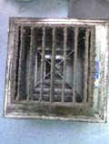
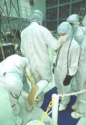

空氣不良危害影響
我們人類，大部份時間都在室內，因此室內空氣品質相對而言就顯相當重要，在目前已知大約有70%的傳染病，可經由空氣途徑傳播，即通過經病源污染的空氣，進而引起呼吸道感染而致病，傳染病患者的呼吸道分泌物與飛沫可攜帶病原體，可通過污染空氣，將致病細菌、病毒傳播給易感人群，引發呼吸系統感染，從而導致患病，上述只是微生物，還有更多慢性之TVOC有害氣體，造成日後健康之問題。


（細菌病毒）氣溫高、濕度大，室內空氣不易流通，極適宜各種致病微生物，氣溫低則對病毒有利，進一步繁殖與擴散由室內空氣受污染而引發周圍人群患病的比例位列各種致病渠道之首，其中，兒童則是“室內空氣污染”的最大受害者，由于兒童的免疫力相對于成人更低，其呼吸系統的免疫功能尚不健全，極易受到空氣中病原體及有害物質的入侵而感染，每當天氣轉涼，各醫院急診迎來就診高峰，呼吸道微生物感染引起的感冒、急性化膿性扁桃體炎高發燒，在空氣乾燥氣溫忽冷忽熱，人的鼻黏膜抵抗微生物細菌侵襲的能力下降，一些在密閉的空調房內集中辦公的白領最易感冒，而居家老人因體質較弱，容易被下班家人從外帶來的微生物菌傳播上疾病，成為各種傳染病易感人群之一，2005年英國有一艘豪華遊輪「海上公主號」遭病毒入侵，兩百多名乘客上吐下瀉，迫使遊輪提前返航，這類案件更突顯IAQ之重要性。
2020年新冠肺炎所引起的傳染，在密閉不通風空間中，更能證實其環境的傳染風險。

TVOc有機揮發物危害
目前的建築物大部份為密閉結構，並且使用空調，造成通風不良，要加強通風量同時，又必需使用更多能源才能降低室內溫度，因此造成室內TVOC(有機揮發物)排不出去，其有機揮發物可來自紙箱、裝潢之建材及清潔劑，其中甲醛需要好幾年才會散發完，甲苯普遍存在於室外和戶外，建材、塗料、油漆、機車排放廢氣都會釋出甲苯，它具神經毒性，大樓 新裝潢之超標甲醛濃度一般而言在可接受致癌風險之100~1000倍，這30年來，台灣氣喘的人數成長了15倍，兒童每三個人就有一位過敏，這些都與我們居住的空間有關；另外室內二氧化碳過多，會造疲勞想睡注意力不集中，這都是室內空氣品質不良的結果之一。
1~5μm的微粒會沉積在人體內，長期吸入造成嚴重呼吸道疾病，如肺部纖維化、呼吸困難、肺癌等。
當環境微細粒子密度增加10μg / m3時，肺癌死亡風險增加8%。(美國醫學會期刊)